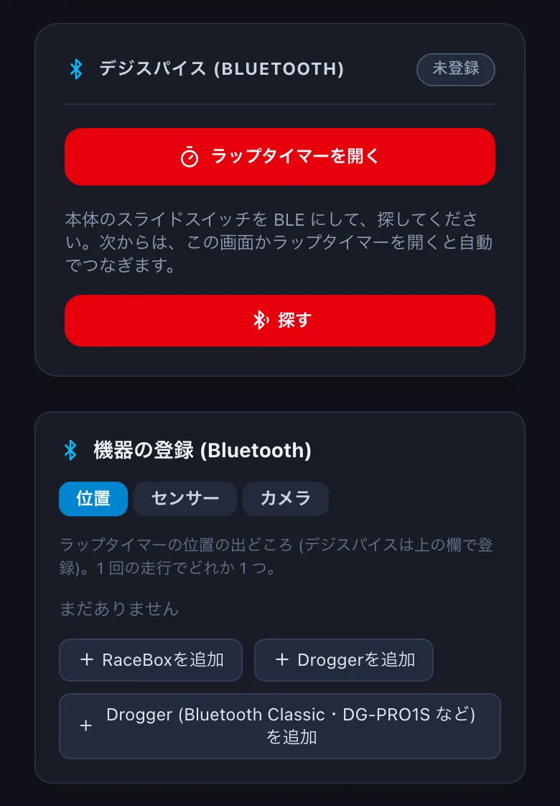
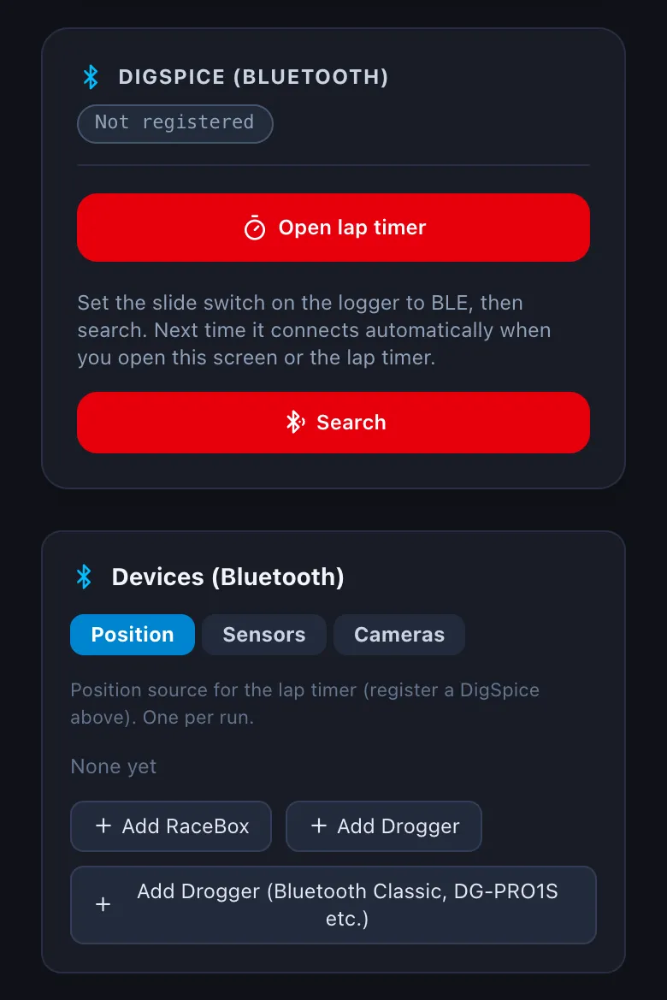

機器を登録するRegistering devices
デジスパイスや RaceBox などの GPS ロガー、心拍計・OBD のセンサー、GoPro を、アプリから Bluetooth でつなぎます。1 度登録すれば、次からはラップタイマーを開くと自動でつながります。Connect GPS loggers (DigSpice, RaceBox), sensors (heart rate, OBD) and GoPro cameras over Bluetooth from the app. Once registered, they connect automatically when you open the lap timer.
-
設定 → 機器 を開きます。デジスパイスは、本体のスライドスイッチを BLE にして 探す を押し、見つかった機器を選びます。Open Settings → Devices. For a DigSpice, set the slide switch on the logger to BLE, tap Search and pick it.


-
ほかの機器は 機器の登録 のタブ (位置・センサー・カメラ) から足します。登録するときに「ファイル名用の名前」(例: obd_nd5rc) を付けると、センサーの値は走行の横の
<走行>.<名前>.csvに記録されます (→ G1)。Add other devices from the tabs under Devices (Bluetooth) (Position, Sensors, Cameras). The "file name" you give (e.g. obd_nd5rc) names the sensor log saved next to the run as<run>.<name>.csv(→ G1).
Bluetooth の機器の登録は、iPhone・Android のアプリだけです。デスクトップ版・ブラウザ版 (Chrome・Edge) では、デジスパイスを USB でつないで吸い出せます (→ B3)。Registering Bluetooth devices is only in the iPhone and Android apps. In the desktop app and in Chrome / Edge you can connect a DigSpice by USB and download its logs (→ B3).